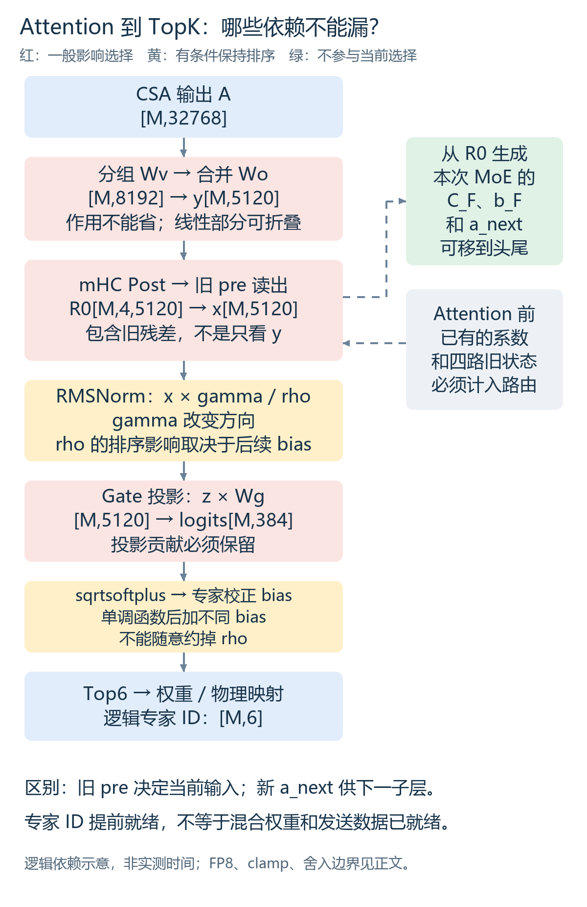
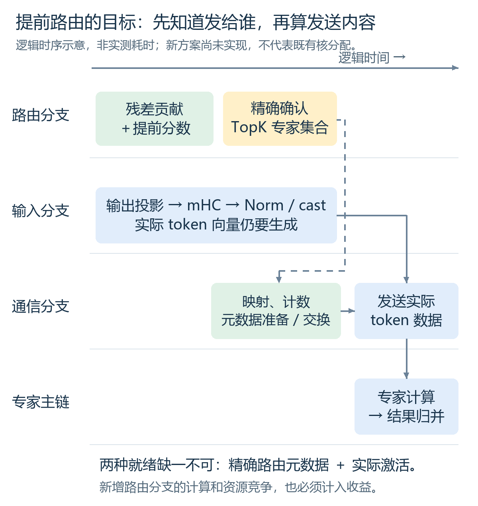
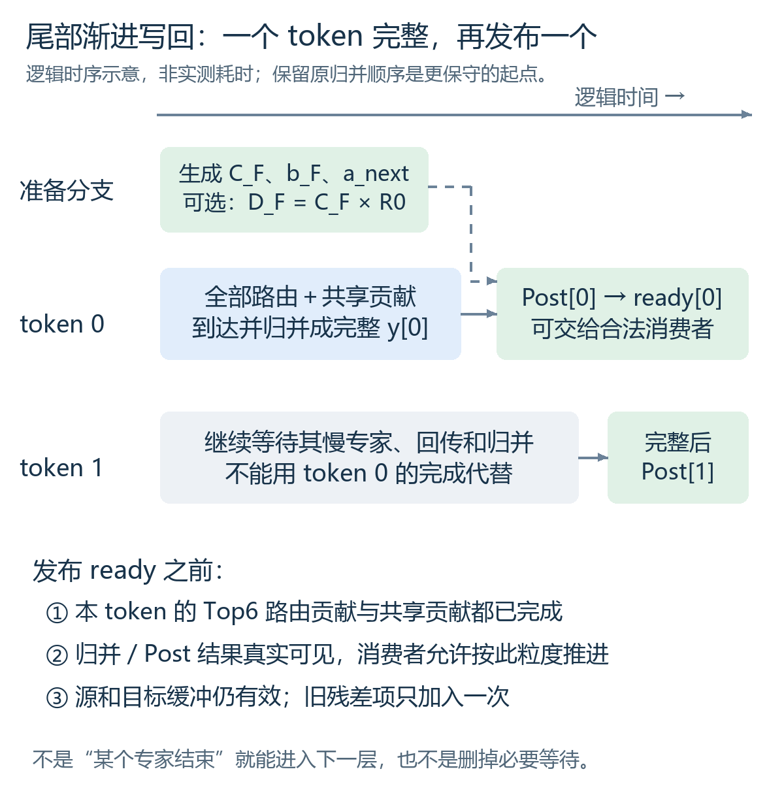

手机阅读：长公式和宽表可横向滑动；配图可点开查看。
2026-11-13。面向熟悉 MegaMoE、希望进一步优化 DeepInfer 整层性能的同事。
先给结论：既要寻找“已经独立的计算”，也要寻找“改写后能更早得到的中间结果”。 前者已有 mHC 系数尾部融合的整网证据；后者包括提前累加 router 分数、提前确认专家集合、按 token 渐进写回。数学改写提供新的调度机会，但增加的计算、存储和舍入变化也必须算进账本。
本文回答三个问题：哪些计算能填 MegaMoE 头尾；Attention 到 TopK 的每一步能否移动或约简；接下来最值得验证什么。新增方案仅做了 CPU 数学检查，没有新增 NPU 实现或性能实验。
MegaMoE 的主体包含 Dispatch、专家 GMM1、激活、GMM2、结果回传与归并。开头可能暴露元数据准备、交换和等待，末尾可能暴露回传、归并和慢 rank 拖尾。但这些时段不一定是“所有计算资源空闲”：共享专家、权重供数、量化及 AIV 归约可能已经在运行。
一次完整 MoE 子层可以概括为：
四路状态 R0
├─ 旧 pre 读出 → RMSNorm → Router / TopK → MegaMoE → y
└─ 生成本次 MoE 的 C_F、b_F、a_next
↓
Post → 四路状态 R1
设备侧主要比较边界应是：相同输入及已有系数就绪 → R1 和 a_next 都能被消费者安全读取。融合后 kernel 做的工作更多，不能只比较它与原 MegaMoE 的 Duration。
本文分析固定版本 DeepInfer 553741557a57df44a46fb3ab72b6aafeaf945337，以及此前使用的 V4.1-Flash 配置；不是对未来版本所有模型的概括。
| 符号 | 含义与 shape |
|---|---|
| M | 当前 rank 的位置行数，可能含 padding；不是全局请求数，也不是单个专家的 token 数 |
| H、r、E、K | 隐藏维 5120、mHC 四路、384 个逻辑路由专家、Top6 |
| R旧、R0、R1 | Attention 前、Attention 写回后、MoE 写回后的状态，各 [M,4,5120] |
| A | CSA/Attention 输出完成对应位置变换后展平，示例 [M,32768] |
| U、y | 第一次输出投影后 [M,8192]；第二次后 [M,5120] |
| C_A、b_A、a_F | Attention 前已生成；前两者负责 Attention 写回，a_F 负责随后 MoE 输入读出 |
| C_F、b_F、a_next | 从 R0 生成；负责本次 MoE 写回和下一子层读出 |
本模型另有 32 个冗余物理槽及 1 个共享专家。TopK 先选择逻辑专家；EPLB 映射再决定物理副本和发送位置。 不能把 416 个物理槽当作 416 个独立的逻辑候选。
关键是 shifted mHC：当前读出使用上一子层生成的 pre，而当前新生成的 a_next 供下一子层使用。 非 shifted 配置需要重新检查，不能照搬本结论。mHC 语义与实现

图中红色步骤一般会影响专家选择；黄色表示只在特定条件下保持排序；绿色分支不参与当前 TopK。图是逻辑依赖，不是按耗时缩放的 trace。
| 候选计算 | 最早可执行时刻 / 必须完成时刻 | 可放的位置与约束 | 当前证据 |
|---|---|---|---|
| 本次 MoE 的 mHC 系数生成 | R0 就绪 / 本次 Post 和后续读出使用前 | 头或尾都满足数据依赖；实际尾部避免与启动段争资源 | 已有本版本、小 M 的融合与整网验证 |
| 下一注入层 Engram 的 hash、fetch | 当前有效 token ID 及请求历史确定后 / 对应层投影前 | 可提早；实现本就有统一 fetch，先确认是否还有可移动工作；通信可能与 EP 争带宽 | 源码允许，新增调度未验收 |
| Engram 的 K/V 投影 | 对应 fetch 的真实数据可读取后 / 门控注入前 | 不依赖当前 MoE 输出，可放头尾剩余 Cube 空档；不能抢慢专家 GEMM | 源码和旧 trace 支持独立性，新增融合未实测 |
| Post 旧状态项 D_F=C_F R0 | C_F 与 R0 就绪后 / 最终写回前 | 可先算，等 y 到来再加；额外缓冲和 HBM 往返可能不划算 | 数学候选 |
| Post 完整写回 | 该 token 的 y 及 C_F、b_F 都就绪后 | 不能放头部；可在尾部按 token/合法片段渐进消费 | 已有批次尾部融合；更细粒度仍待实现 |
| 共享专家 FFN | 当前归一化输入就绪后 / 与路由专家合并前 | 可覆盖部分 Dispatch 等待，但当前 MegaMoE 已融合共享路径；先检查已有调度 | 既有机制，不能重复计作新增收益 |
| Norm、量化、Gate、TopK 的生产者融合 | 对应输入片段就绪后 / 发布路由与发送数据前 | 可减少启动和中间读写；它们本身仍是必需生产者，不会因融合就独立 | 当前已有部分 Norm/cast 融合；更大融合边界待测 |
| 当前路由元数据 | 精确专家 ID、有效行及物理映射确定后 | 可以与剩余输入计算重叠；完整 token 数据仍须等输入完成 | 新提前路由方案的目标 |
| Engram 门控、下一层 Q/KV/Attention | 当前 y 经 Post、必要 Engram 注入及读出后 | 不能整批提前；只能研究合法 token、KV 依赖及通信协议下的渐进流水 | 不是现成的独立旁路 |
这里的“融入”分两层：先用调度重排验证工作能否有效重叠，再考虑放进同一 kernel。只改成不同 stream，并不能证明设备资源真的并行。
mHC 系数生成把 R0[M,4,H] 展平为 T[M,20480]。有效投影权重为 [24,20480]，并计算每行平方和：
然后按本模型参数拆成：
Sinkhorn 是对正值矩阵进行交替归一化的迭代，具体初始化、epsilon 与次数必须沿用算子实现。上面保留函数边界，不把它错误简化成一次 softmax。这组结果共 [M,24] FP32；M=16 时只有 1.5 KiB，主要代价不是结果大小，而是投影、读入、归约与多次启动。投影/RMS实现
Engram分成“与隐藏状态无关”和“有关”两段：
token ID + 同请求历史 → n-gram hash → fetch → e[M,6144]
e × Wkv[6144,25600] → KV[M,5,5120]
↓
四份 key + 一份共享 value
当前四路状态 R → 归一化点积、门控 → R + gate × value
只有 hash、fetch、K/V 投影这一侧可提前。门控仍依赖真实 R；在下一层 Attention 入口注入时，它通常需要当前 MoE 的写回结果。M=16 时投影结果若以 BF16 保存约 0.781 MiB，提前量越大、同时在途层越多，生命周期成本越高。
原代码每个注入层从自己的投影参数计算 K/V；不能将不同层参数不同的投影当作一次共享计算。历史例子只有主模型 L01/L14 注入，也不是每层都有一份 Engram 可拿来填空。Engram 投影与门控
旧 D02 主模型例子为 M=16，deepinfer:launch_forward_N2_B12，设备 Stream181 / Model62。区间相对 capture:real_requests_prefill_through_completion 起点：
| Task | 完整名称或明确分组 | 区间 +ms | kernel 累计耗时 |
|---|---|---|---|
| 21679–21682 | tf32_hc_prenorm_gemm_kernel_kernel → mhc_reduce_partials_and_rmsnorm_fwd_asc_kernel → mhc_pre_split_mixes_fwd_simd_mhc4_asc_kernel → mhc_sinkhorn_fwd_asc_kernel |
2351.504264–2351.523196 | 18.866 μs |
| 21687 | MegaMoE，完整编译符号见逐算子附录 | 2351.542466–2351.766194 | 223.728 μs |
| 21688 | mhc_post_fwd_asc_kernel |
2351.766216–2351.769596 | 3.380 μs |
| 21689 | 下一层 Engram K/V 投影，完整 GEMM 符号见逐算子附录 | 2351.769618–2351.827613 | 57.995 μs |
它们说明外围工作存在，不说明 18.866 或 57.995 μs 都能藏进头尾。223.728 μs 也是完整 MegaMoE，不是纯专家计算或纯通信时间。形状是固定源码重建，不能假装是所有 profiler 事件直接记录的参数。此前依赖分析、逐算子定位入口
以下采用行向量约定，批量时在最前面加 M。影响 TopK 指逻辑专家集合是否可能变化，不等于专家混合权重不变。
步骤①：Attention 输出及两次投影。 令 A 已经过源码要求的位置变换。第一次是分组线性变换，第二次合并到 H 维：
示例 shape 是 [M,8,4096] → [M,8,1024] → [M,8192] → [M,5120]。W1 是 8 组 [4096,1024] 的块对角算子，W2 为 [8192,5120]。不要真的把 W1 展开成稠密 [32768,8192]，那会破坏分组结构、增加八倍参数槽位。
投影会影响 router 看到的方向，但纯线性部分可以尝试结合律重排。真实实现夹有逆 RoPE、FP8 cast 和可选 clamp，不能把它们当成两张固定矩阵一起消掉；逆 RoPE 可按已知位置处理，但不是所有位置共用同一固定变换。输出投影代码
步骤②：Attention 的 mHC Post。
这一步将旧残差和 y 混合。只用 Attention 输出预测 router，会漏掉残差贡献；即使投影完全线性，也不能忽略它。
步骤③：MoE 的 mHC Pre 读出。
四路权重会影响 x。这里用的是此前 Attention 子层生成的 a_F。与此同时，从 R0 新生成的 C_F、b_F、a_next 不参与当前 x，因而可以延后。
步骤④：RMSNorm 与激活格式准备。
gamma 是逐通道权重，会改变方向；rho 是同一 token 所有通道共享的正数。router 使用 BF16 归一化输入；专家还需要对应的 FP8 激活及 scale。两条消费路径不能混为一谈。后面的 FP8 专家输入 cast 不用于决定 BF16 router 的专家集合，但它决定发送内容，不能省掉。
步骤⑤：gating_proj。
定义固定 Q=diag(gamma)Wg，则在实数算术下 ell=(xQ)/rho(x)。gamma 可以折叠进 Q；这表示保留它的作用，不是说它无影响。
步骤⑥：非线性打分与校正 bias。
f 单调递增。如果没有专家相关 bias，TopK(f(ell))=TopK(ell)。当前路径却有用于选择的校正 bias，必须比较整个 s。这里只讨论正常有限值；mask、并列规则、padding、文本/图像 bias 也须保持原契约。Gate 参数、路由调用
步骤⑦：选择、权重及物理映射。 对有效位置：
校正 bias 用于选专家，不把它直接加进最终混合权重。lambda 为模型的 routed scaling factor。随后按 EPLB 当前布局映射到物理槽。元数据提前发布需要准确的逻辑 ID、有效行、物理映射版本和计数，不只是一个未经确认的 TopK 猜测。
| 操作 | 专家集合是否一定不变 | 本链路能怎样利用 |
|---|---|---|
| 每个专家分数都加同一个数 | 直接取 TopK 时不变 | 专家不同的校正 bias 不属于这种情况 |
| 每个专家分数都乘同一个正数 | 直接取 TopK 时不变 | 若随后再加不同 bias，结论不再普遍成立 |
| 对分数施加同一严格单调函数 | 直接取 TopK 时不变 | 后面还有不同 bias，不能任意删除这个函数 |
| 按通道乘 gamma、混合四路残差 | 不保证 | 可折叠/展开，不能直接省略 |
| 连续固定线性映射用结合律合并 | 实数上等价 | 包含所有分支后才成立；量化、clamp、舍入另验 |
| TopK 后归一化选中专家权重 | 不再改变已经选中的 ID | 权重仍影响最终输出，可以与元数据准备区分 |
| 从 R0 生成本次 C_F、b_F、a_next | 不参与当前 TopK | shifted mHC 下的独立旁路 |
一个最小反例即可否定“rho 永远可以忽略”。取 q=[2,1]，校正 bias=[0,0.1]：
| q 的公共缩放 | sqrtsoftplus(q)+bias |
Top1 |
|---|---|---|
| 1 | [1.4584,1.2460] |
专家0 |
| 0.1 | [0.8934,0.9628] |
专家1 |
另外，即使 bias 为零、专家 ID 不变，f 不是齐次函数，normalize(f(q)) 与 normalize(f(0.1q)) 仍可能不同。提前确认专家 ID，不等于专家混合权重已经就绪。
同事的 idea 提醒我们，不必等中间大张量全部物化才计算它的某个投影。把步骤②③展开，对每个 token 定义：
得到：
这说明 mHC 没有自动否定线性改写，但必须把残差项和动态连接系数一起算进去。C_A、b_A、a_F 已知后，残差贡献甚至可在 Attention 尚未结束时准备。Attention 贡献则等 A 就绪后用 P 投影。
一个较保守的起点是等第一次输出投影 U 就绪，再算：
这少争取了一段提前量，但新增矩阵更小。无论哪种，都还要解决 rho、BF16 归一化舍入和带 bias 的排序；它们目前是候选分数生产方式，不是已实现的精确提前 TopK。
算一下新增成本，避免只看到“提前”。 下表按本例维度、单 token、稠密乘加数计；不是设备时间预测：
| 路由分数分支 | 主要乘加数 / token | 新预合成矩阵的 BF16 存储 |
|---|---|---|
原 router xQ |
1,966,080 | Q 约 3.75 MiB，可能替代原 gate 参数，取决于存储策略 |
CSA 后的 Attention 贡献 AP |
12,582,912，约原 gate 的 6.4 倍 | P 约 24 MiB/层；40层约 960 MiB |
U 后的 Attention 贡献 U(W2Q) |
3,145,728，约原 gate 的 1.6 倍 | 约 6 MiB/层；40层约 240 MiB |
后两行还没有算 r_eff Q 的约 1,966,080 次乘加、动态系数和尺度。原两次输出投影仍需生成专家输入，不能从账本里删除。 把四路各自投影再合并，也可能把一次 gate 变成四次。表中的 BF16 只是存储预算；采用此精度是否满足数值契约尚未验证。
不能说 rho 在数学上绝对要等完整 x 物化。令 U=AW1、G=W2 W2^T，有：
这样可从 U、残差和预计算 Gram 矩阵求 rho，而不先输出完整 y。但 G 是 [8192,8192]，FP32 为 256 MiB/层，40层约 10 GiB；还增加每 token 的二次型及交叉项计算。本例 J 比 H 大，这通常不是一个自然省算的改写。二次型也可能出现消减误差，数值稳定性需额外检查。
只有实际权重存在可利用的精确结构、低成本分解，或某些矩阵乘被原流水免费复用时，才值得继续。截断 SVD 等近似不能叫原模型数学等价。
如果能在输入尚未完全就绪时，获得可靠的尺度区间 rho∈[L,U]、0<L≤U，对于已准确得到的 q，可构造：
对候选集合 S，若：
则区间内所有 rho 都得到同一个专家集合。此时可先做物理映射、计数和无需权重的元数据，精确混合权重稍后补齐。证书不成立就走原路径；不能把猜错后重新发通信当作免费回退。
还可研究将“选专家”和“算混合权重”分开：精确 ID 已确定后，保留原 Norm 路径，只计算选中6个专家的分数来生成权重，避免后续又完整执行384路 Gate。实数上成立，但专用小投影是否保持原累加/舍入仍要检查；现有同时消费 ID 和权重的通信接口也需要明确拆分，不能只改变 Python 调用顺序。
这是“求解完整分数”转成“证明选择结果已确定”的新方向，但当前没有真实模型命中率或可用区间来源。粗糙范数界可能几乎总回退；计算界的成本也可能超过省下的等待。真实实现还须把 q 的误差、量化、BF16 舍入和并列规则纳入区间。CPU 小例子通过不等于已有可用于发布通信的工程证书。
可以研究把输出投影的完成片段、mHC 写回/读出、平方和归约、Norm 与 Gate 组织为生产者流水，减少独立启动和中间 GM 往返。实数下可边生产 x 的通道块，边累加 sum(x²) 和 xQ，最后再除 rho、打分并 TopK。
不过原实现的 router 消费的是逐通道归一化后舍入的 BF16 值；先累计 xQ 再除 rho 会改变舍入位置，仍须验证。若要求严格保留原数值顺序，可先完整算 rho，再在融合 kernel 内逐块生成原 BF16 norm 值并喂给 Gate。这可能节省物化和启动，但不能声称提前知道 TopK。
两种改法要分别实验：一个改变数学求值顺序，一个仅改变存储和调度边界。

目标是先知道“发给谁”，与“算出要发的数据”并行。完整 Dispatch 不能只靠 ID；而原 Gate 若已经被前移分支替代，就不应再算一次充当所谓可隐藏工作。图中未给出实测头部窗口或核分配。
对一个 token，记完整 MoE 输出为：
Post 是：
分配律允许先算旧状态项，或对到达的专家结果逐项累加：
数学上可渐进累加，不代表任意部分到达就能让下一层消费。 实际需确保该 token 全部路由贡献与共享贡献完成、结果可见，再发布 token-ready；不能把残差项按专家加 K 次。把 b_F 乘到远端专家结果还可能扩大通信或改变舍入，不能仅凭分配律就迁移物理实现。
更保守的方案是：保持原 Combine 求和顺序，某 token 的完整 y 就绪后立刻执行 Post，而其他 token 继续回传。若沿 H 分片，还要等待下一层 Norm 所需的全部通道平方和；逐 token 交接和逐通道交接不是同一个协议。

图只展示就绪关系。它不假设现有实现已经提供 token-ready 事件，也不代表可以删除全局协议规定的计数或缓冲释放条件。
本例 Engram 特征由24个256维查表结果拼接。将投影矩阵按输入行拆成24块，可写成：
因此可以研究 fetch 与分组投影流水，而不一定等待完整6144维特征才启动投影。它的意义是把依赖粒度从“所有查表完成”降到“一个合适分组就绪”；代价是小 GEMM 启动、输出累加及缓存流量。工程上应先试少量分组，不能默认拆成24次最快。原量化和累加边界改变后，仍需数值验证。
另一个看似更激进的办法是预计算每个表项的 e_j Wkv,j。但同类型存储下，表项从256维变成25600维，扩大约100倍，而且不同注入层的投影不同。未经容量分析不能把这个“省计算”写成推荐方案；只有有限热点的受控缓存等条件成立时才值得单独评估。
此前“本次 mHC 系数＋Post 尾部融合”在 16 NPU、EP16/DP16/CP1、固定256条公开 ShareGPT 请求的完整 A1→B1→B2→A2 中得到：
| 最大在途请求 | 原路径 token/s | 融合路径 token/s | 提升 |
|---|---|---|---|
| 16 | 851.25 | 885.24 | 3.99% |
| 32 | 1169.76 | 1213.03 | 3.70% |
| 64 | 1455.85 | 1489.47 | 2.31% |
每版本两次独立初始化、每并发点各两遍，共24个全局正式窗口；实际容量、专家布局、完整输出 token ID 一致，正式窗口零 JIT。平均输入272.70、输出166.76 token，每遍42691个输出 token；输出既有自然 EOS 也有长度上限结束。它是直接调用引擎的固定工作闭环测试，不包含 HTTP、分词或网络。
此结果仅支持该负载、版本与小 M 生效范围；不是本文提前路由、Engram 新调度或渐进写回的收益。此前另一机器窗口的一对 A/B 接近持平；在线到达率完整 ABBA 未通过验收，不能宣称在线 SLO 收益。候选仍默认关闭。
附带 CPU 验证脚本 和 结果，使用固定随机种子，验证了：
这些检查用于排除推导错误，不测试真实模型权重、NPU 指令、同步、量化精度或性能。配图与本文也未启动或恢复资源轮询。
| 优先级 | 最小实验 | 要回答的具体问题 | 放弃或继续的依据 |
|---|---|---|---|
| 1 | 现有尾部融合上，只加入一项 Engram 投影调度；先选真实注入层及已 fetch 数据 | 剩余头尾资源是否能承载它，还是争 Cube/HBM 让主链变慢？ | 比较完整输入就绪到注入后状态可消费；收益不可与旧结果相加 |
| 2 | 原数值顺序下融合 Norm/Gate/TopK 的存储边界，或减少输入前缀物化 | 能否不增加大矩阵，就减少启动和 GM 往返？ | 完整子层、数值、寄存器/UB、回退 shape 一起验收 |
| 3 | 先做 U 后的提前分数分支，再做 CSA 后分支；使用真实 Attention/残差/系数 | 新增成本是否小于可提前的时间，真实 Top6 边界是否稳定？ | 完整 logits、ID、权重与原路径对照；不只比较集合命中率 |
| 4 | 真实输入上分析第6/7名间隔、可靠尺度/分数区间及证书成本 | 能否在不猜路由的情况下提前确定专家集合？ | 包含有限精度误差的证书有用，且失败可低成本回退；否则停止 |
| 5 | 保留原归并顺序，增加 token 完成后 Post 的渐进消费 | 慢 token 回传期间，其他 token 的后处理能否推进？ | 每 token 路由/共享计数、完成可见性、缓冲生命周期无遗漏；测完整写回 |
Gram 尺度改写暂列低优先级：当前 J=8192 的稠密成本已足够构成反对证据，先找权重结构或复用机会再试。
所有实验先冻结同节点、源码/原生库/量化布局/模型输入/专家布局/容量；自然路由、共享专家和有效行规则保持一致。小算子精度、性能、独立 timer 流水分开采；timer 不是默认零成本。通过局部筛选后，再做无 profiler、零 JIT 的独立进程 ABBA，并另采 trace 检查融合次数、完整 FFN 和真实路由。
头部用输入就绪、精确 ID 就绪、元数据发布/完成、激活就绪、首个专家可计算等事件定位；尾部用专家结果真正完成、回传/归并可消费、Post 和 a_next 就绪定位。提交指令或观测到某线程退出，不等于整个数据已完成。只比较真实全 rank 最慢完成时间，不把不同 rank、不同请求的 trace 逐 kernel 强行配对。
收益条件不是“多塞一个算子”，而是：节省的串行关键路径，大于新增计算、访存、同步和资源竞争的代价。 例如理想独立任务从串行变重叠时最多省两段时间的较小者；真实融合还受同一资源互斥与依赖约束，不能用这个上界作收益预测。
最直接的候选仍是本次 mHC 系数和已取回数据的 Engram 投影；完整 Post 则要沿真实完成粒度进入尾部。数学视角的新价值，是把“必须等完整中间张量”改成“只要某个投影、范数或排序证书已经足够”。
提前路由不是被 mHC 一票否决，而是从两张矩阵的结合律，升级成残差、动态连接系数、归一化、选择 bias、物理映射与有限精度都完整的推导。本例 CSA 后分支有明显新增成本，不能预设它是下一项最优方案。
源码入口及固定身份保存在 源码证据清单。建议先读第二节确定可直接调度的任务，再用第三节筛选值得实现的数学方案。